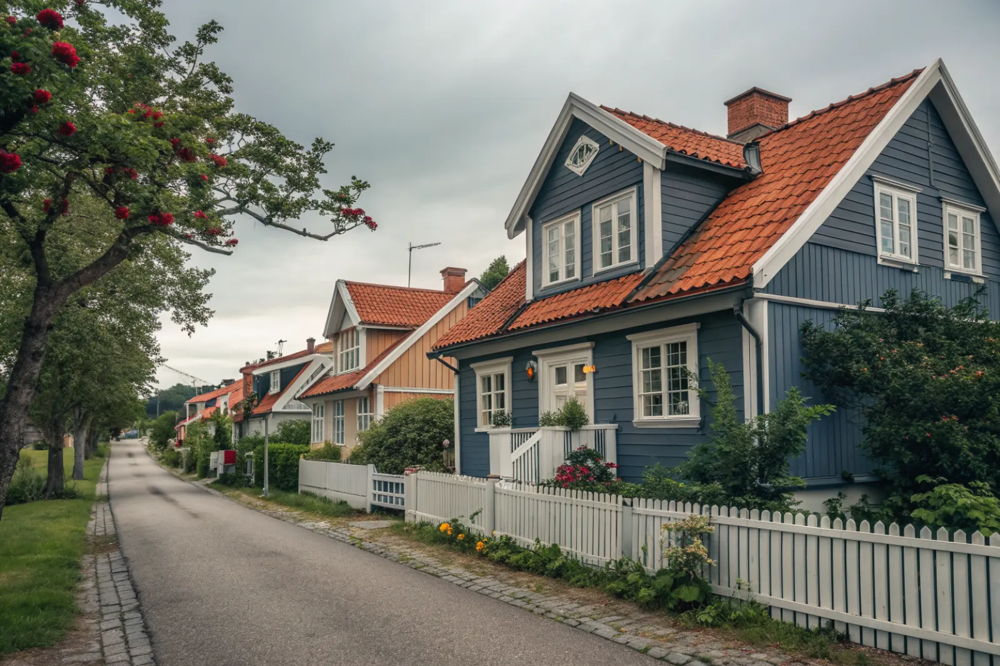

Takbyte i Enskede
Byte av tegel-, betong- och plåttak.
Takbyte i Enskede →Enskede söder om Södermalm rymmer Gamla Enskede, en av Stockholms första trädgårdsstäder. Vi är takläggare i Enskede för villor, parhus och radhus i bland annat Gamla Enskede, Enskededalen, Enskede gård, Stureby och Svedmyra.
Gamla Enskede började byggas strax efter 1900 som trädgårdsstad, med små villor och parhus i trädgårdar längs svängda gator. Många hus har branta tak med lertegel, ofta brutna tak eller sadeltak med kupor.
Enskede gård har mycket bebyggelse från 1930–40-talet med radhus och lamellhus, medan Enskededalen, Stureby och Svedmyra har villor och småhus från 1920-talet och framåt.
Trädgårdsstadens karaktär bygger på enhetlighet: liknande takmaterial, kulörer och detaljer hus efter hus. Vid ett takbyte här är målet att taket ser ut som förut men blir tätt för lång tid.
Oavsett om du behöver ett komplett takbyte eller en riktad renovering ger vi en tydlig bedömning och offert. Vi arbetar även i grannområden – se alla områden vi arbetar i.

På de drygt hundraåriga husen i Gamla Enskede har taken i regel lagts om minst en gång. Kupor, brutna takfall och skorstenar mellan parhushalvorna är vanliga läckagepunkter, liksom gamla ränndalar av zink. I parhusen hänger halvornas tak ihop, och en skada på ena sidan kan visa sig hos grannen.
Radhusen i Enskede gård och småhusen i Stureby och Svedmyra har oftare enklare sadeltak med betongpannor eller tegel, där underlaget är det som tagit slut. Gamla fruktträd och stora lövträd ger mycket löv i hängrännorna på hösten.
Gamla Enskede är en kulturhistoriskt värdefull miljö, och detaljplanerna kan innehålla skydds- eller varsamhetsbestämmelser. Byter du till samma material och kulör krävs normalt inget lov, men vid förändring av material, kulör, kupor eller takfönster är det viktigt att stämma av med stadsbyggnadskontoret i Stockholms stad först.
Tomterna är små och gatorna smala, så ställning och container planeras tillsammans med grannarna. I parhus lönar det sig ofta att samordna så att båda halvorna får nytt tak samtidigt.
Byte av tegel-, betong- och plåttak.
Takbyte i Enskede →Riktade åtgärder som förlänger takets liv.
Takrenovering i Enskede →Bedömning av skick inför beslut.
Takbesiktning i Enskede →Nytt ytskydd på plåttak.
Takmålning i Enskede →Skonsam tvätt och mossbehandling.
Taktvätt i Enskede →Nytt plåttak och plåtarbeten.
Plåttak i Enskede →Vi utgår från Bromma (Mariehäll) och når Enskede via Essingeleden och Södra länken. Vi kommer ut på besiktning och följer arbetet på plats.
Läs mer om tak på villa eller jämför takbyte och takrenovering innan du bestämmer dig.
Vi arbetar även i Farsta.
Takläggare i Farsta →Vi arbetar även i Älvsjö.
Takläggare i Älvsjö →Vi arbetar även i Hägersten.
Takläggare i Hägersten →Vi arbetar även i Nacka.
Takläggare i Nacka →